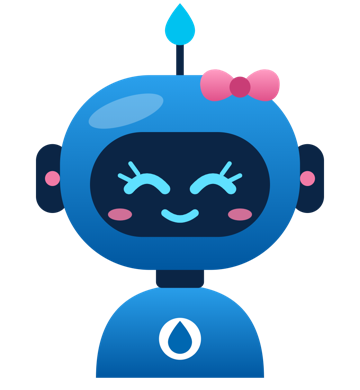

A Bella é uma IA e pode errar. Confira no Webformat ou no SAP antes de decidir. · Privacidade · Termos ·

Master Data · Sabesp
Pergunte do seu jeito, como no chat do Teams: solicitações do Webformat, materiais do SAP e dúvidas do cadastro.
Não tem código? Peça à Bella no chat pessoal do Teams: “qual o meu código de acesso?” Ele é só seu.
A Bella é uma IA e pode errar. Confira no Webformat ou no SAP antes de decidir. · Privacidade · Termos ·